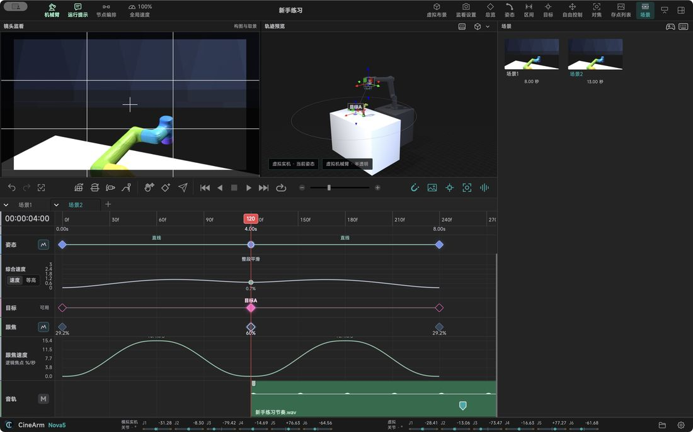

功能详解 / 项目与场景：一个项目留多套方案
项目与场景：一个项目留多套方案
一个项目里可以同时放好几套方案，比较完再决定拍哪条。
项目一次拍摄的全部内容在一个文件里，拷走就能带走。
场景想试另一种走法就复制一份场景，原来的方案不会被改坏。
存点常用机位存成母版，换镜头、换机器都能再调出来。
快照给机位留一张构图图，隔天回来还认得出那是哪个镜头。
备份项目连同音频一起打包，换电脑接着拍。
撤销改错了随时撤回；机械臂已经走过的路不会跟着退回去。

本页内容对应 CineArm v0.1.49。